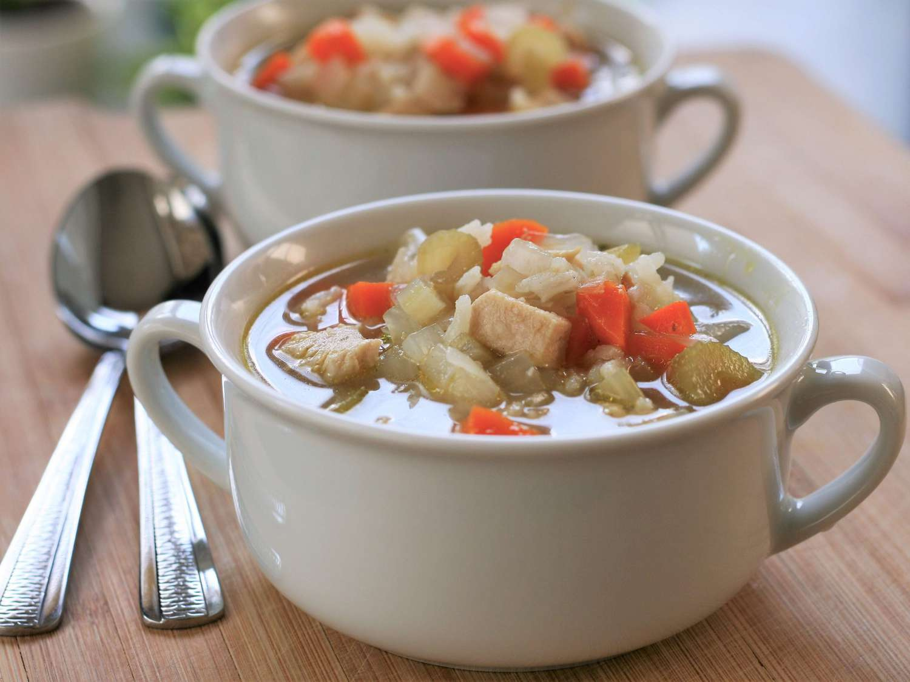

Chicken, Rice, and Vegetable Soup

Description:
This delicious chicken, rice, and vegetable soup is perfect as a meal, or try it as a snack to stave off hunger between meals.
Source: https://www.allrecipes.com/recipe/15257/chicken-rice-and-vegetable-soup/
Image Source: Google Image
Ingredients:
- 5 cups water, or more as needed, divided
- 1 (14.5 ounce) can chicken broth
- 2 skinless, boneless chicken breast halves - cut into cubes
- 3 medium carrots, chopped
- 3 stalks celery, chopped
- 1 medium onion, chopped
- 2 cubes chicken bouillon
- ⅓ cup uncooked white rice
- salt and pepper to taste
Steps:
- Combine 4 cups water and chicken broth in a large saucepan over high heat; bring to a boil. Add chicken, carrots, celery, onion, and bouillon cubes. Reduce the heat to low, cover, and simmer until vegetables are tender, about 15 minutes.
- Add rice and up to 1 cup water if necessary; simmer until rice is tender, about 15 minutes. Season with salt and pepper.